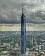
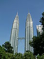
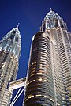

Merdeka 118, także PNB 118 – wieżowiec w Kuala Lumpur, stolicy Malezji. Budynek ma 678,9 metra wysokości oraz 118 pięter.
Prace nad budynkiem zaczęły się w 2014 roku. Budowa została ukończona w 2023 roku, a 15 stycznia 2024 wieżowiec został oddany do użytku.
Rozwój Merdeki 118 jest finansowany przez Permodalan Nasional Berhad. Konstrukcja jest obecnie najwyższym budynkiem w Malezji, wyprzedzając
Petronas Towers oraz drugim najwyższym budynkiem na świecie.
80 ze 118 pięter zajmą biura, z czego 60 zajętych będzie przez inwestora obiektu.
Poza tym w budynku znaleźć się mają hotele, prywatne apartamenty, placówki administracyjne, a także parking,
restauracja, vip club (na ostatnim piętrze) oraz centrum handlowe i rozrywkowe.

Petronas Towers – dwie wieże w Kuala Lumpur, stolicy Malezji, o wysokości 452 metrów, jedne z najwyższych budowli świata.
Zachowują one tytuł najwyższych bliźniaczych wież świata oraz budynków zbudowanych przed końcem XX wieku. Petronas Towers
były najwyższymi budynkami świata od roku 1998 do 2004. Dwa drapacze chmur są połączone przejściem (mostem)
o długości 58 m na poziomie 41. i 42. piętra.
Wieże zaprojektował argentyński architekt César Pelli, a oddano je do użytku w 1998 roku.
Mający 88 czterometrowych pięter nad ziemią i 4 piętra pod ziemią wieżowiec zbudowany jest głównie z żelbetu;
elewacja wykonana jest ze szkła i stali. Wieże zbudowano na miejscu dawnego hipodromu. Twarda skała jest w tym miejscu osadzona bardzo głęboko,
przez co budynek posiada prawdopodobnie najgłębsze fundamenty na świecie, sięgające na około 150 metrów w głąb ziemi i wymagające ogromnych ilości betonu.
Nietypowym posunięciem było wynajęcie dwóch różnych firm do budowy obu wież. Konkurencję wygrała firma Samsung Constructions odpowiedzialna za wieżę 2,
mimo że zaczęli miesiąc później od budowniczych wieży 1, firmy Hazama Corporations, i choć później wystąpiły problemy z odchyleniami wieży od idealnego pionu (ok. 25 mm).
Wieże zostały zbudowane na szkielecie dwóch żelbetowych rdzeni o wymiarach 23 x 23 metry
otoczonych kręgiem bardzo wysokich kolumn, na których oparła się konstrukcja budynku.
Architektura wież nawiązuje do sztuki islamskiej, co wiąże się z tym, że głównym wyznaniem w Malezji jest islam.
Obie wieże mają łącznie 76 wind, do transportu używanych jest
29 dwupoziomowych wind i 10 ruchomych schodów, poza tym wieże
na wysokości 41 i 42 piętra, czyli na wysokości 170 metrów połączone są ze sobą zewnętrznym mostem o długości 58,5 m. Windy zabierają jednorazowo 26 osób.
